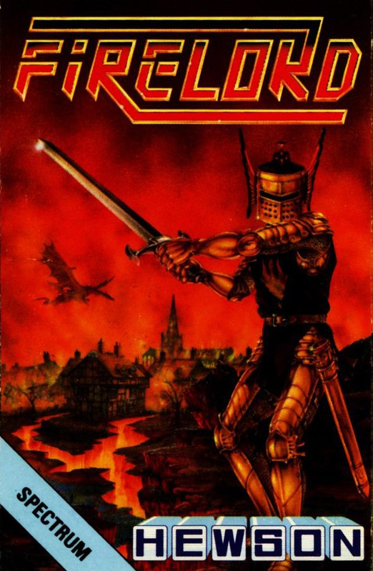
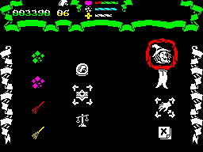
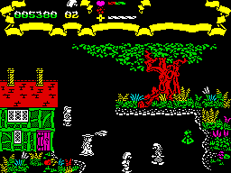

Firelord


{kind=link}

| Publisher: | Hewson Consultants |
| Price: | £8.95 |
| Year: | 1986 |
| Source: | CRASH, Issue 35 |

Steve Crow has joined the Hewson label for his latest release, having built up a powerful reputation as a Spectrum programmer with games like Wizard’s Lair and Starquake. His latest game stars a chivalric hero on a quest to liberate an oppressed land...
The Evil Queen who rules over the stricken land of Torot has a new and very deadly weapon in her possession. Using her cunning charm she has tricked a dragon into parting with the powerful Firestone which conveys the ability to hurl fireballs. With this weapon in her hands the wicked queen sets about terrorising the inhabitants of Torot.

of icons reveals the wares on offer from
the householder, whose portrait
appears at the top of the right hand
column of action icons.
Luckily it just so happens that a happy avenger of evil is in the neighbourhood at the moment. Sir Galaheart is a fearless Knight who hopes to con the Queen into letting him have the Firestone. The wicked Queen is terribly vain and terribly scared of growing old and losing her beauty. Sir Galaheart plans to find the four ingredients for the spell of Eternal Youth and trade them with the Queen for the Firestone.
Although the inhabitants of Torot have fled into their homes, the land is by no means empty. Deadly Fire Ghosts abound, ready to sap away Sir Galaheart’s essential life force if they get too close. When the bold knight’s energy level reaches zero he loses one of his five lives. At the beginning of the game, Sir G. doesn’t have any weapons with which to defend himself against the ghosts, so his first priority is to arm himself. His firepower comes in the form of different coloured crystals, but these only last for a while, so new ones must be collected.
Sir Galaheart roams around the land of Torot looking for the charms needed to brew the secret youth spell. Useful objects, spells and charms are kept by the inhabitants of Torot inside their houses, so Sir G. must enter their homes and barter with them. Some of the objects lying around in the open are useful when it comes to bartering with the locals.

When Sir Knight enters a house, the view moves to an icon screen. One column of icons shows the objects which the housekeeper has to offer, another shows items carried by our hero. After deciding whether he wants anything, the hero can access a column of action icons and attempt to trade. If all else fails, a bit of pilfering might just work... The hands icon represents the theft option, and to steal you have to wait until the householder turns away and then move the control arrow from the theft icon to the object which you want to steal. Move it quickly to the object you are offering then over to the acceptance icon and you have stolen the required object.
If the householder looks round at any time during the theft, you are automatically brought up before the Reeve, who judges you. Should he decide you’re guilty you get a reaction test, and have three attempts at stopping a moving arrow. Get it wrong, and you could lose up to three lives.
Sir Galaheart has to keep his energy up, and tasty bits of food can be found along the way. When Sir G. picks these up, his energy level shoots back up to maximum. However, should the knight lose a life, he is instantly vaporised and his tin helmet clatters to the ground...
Your knight must negotiate his way through leafy glades and deserted towns in his quest. Apart from scuttling around on his feet, there are also transporters which take him to a different location in the game. If Sir G wants to return to a Magic Place, he must remember the correct objects for the spell — casting the spell takes him to his destination.
Apart from useful objects, the knight can trade for information with the locals. Although they would like the reign of the power-crazed Queen to end just as much as he does, they’ll only oblige for a price!
CRITICISM
“Steve Crow has certainly got a fair list of hits behind him, from the very good Factory Breakout, to the superb Starquake. This next one follows on very well, though in a different vein. Another arcade adventure is all very well, but one of this calibre is very welcome indeed. The graphics are very good, with the colour used lavishly and to good effect. I don’t think that there is anything in the game that is bad, in fact I like it a lot. If arcade adventures are your scene, then get a load of this.”
“I’m very impressed with this. I got straight into Firelord and thoroughly enjoyed playing it. The layout is very similar to Robin of the Woods, and graphically they are very alike. This is one of the best arcade adventures around. The sound is very good and contains some excellent spot effects and a good tune at the beginning. All the backgrounds are very colourful and are well drawn. I liked the way you can go into different doors and find different people in houses — all offering useful bits ’n’ bobs. Stealing is also fun but quite tricky. Presentation is well up to Steve Crow’s standards.”
“An excellent game this, but would you expect anything else from the man who brought us Starquake? I really enjoyed playing this one although the instructions are not much help. I think Firelord will have wide appeal as you don’t need a great deal of joystick mangling. A good memory is necessary however, as running around the hundreds of screens can often lead you to lose your bearings, and the signpost ‘service’ given by some home occupants isn’t very helpful. Graphically the game is excellent, but its outstanding feature is the colour. The sound is admirable: there are a couple of tunettes on the title screens and there are lots of lovely effects during the game. I strongly recommend this game.”
COMMENTS
| Control keys: | Redefinable: up, down, left, right, fire |
| Joystick: | Kempston, Cursor, Interface 2 |
| Keyboard play: | No problems |
| Use of colour: | Excellent |
| Graphics: | Picturesque |
| Sound: | Small tunette at the beginning of the game with really good spot effects throughout |
| Skill levels: | One |
| Screens: | 500 |
| General rating: | Steve Crow does it again! |
| Use of computer: | 91% |
| Graphics: | 91% |
| Playability: | 91% |
| Getting started: | 85% |
| Addictive qualities: | 91% |
| Value for money: | 89% |
| Overall: | 91% |